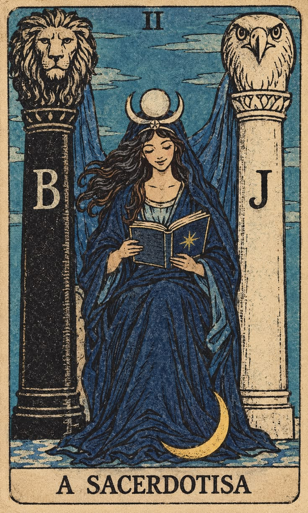

Atendimento confidencial e acolhedor
Clareza para atravessar escolhas com mais presença.
Leituras de tarot conduzidas com cuidado, escuta e profundidade para apoiar sua reflexão, seu autoconhecimento e seus próximos passos.
Confidencial
Sem julgamentos
Direcionamento prático

Leituras
Escolha a leitura certa para a pergunta que está te acompanhando.
Você recebe uma leitura personalizada, com linguagem clara, escuta sensível e foco em clareza prática — sem julgamentos e sem promessas vazias.
Sobre a proposta
Tarot como espelho, não como sentença.
O tarot é usado aqui como uma ferramenta simbólica de reflexão: ele ajuda a organizar percepções, nomear sentimentos e iluminar caminhos possíveis. A leitura não promete certezas absolutas sobre o futuro; ela oferece um espaço seguro para escuta, presença e autoconhecimento.
A leitura foi profunda e delicada. Saí com mais clareza sobre o que eu estava sentindo e com perguntas importantes para continuar refletindo.— Marina S.
Agendamento pelo WhatsApp
Vamos abrir um espaço para sua pergunta?
Envie uma mensagem pelo WhatsApp para escolher o melhor horário e o tipo de leitura ideal para você.
Reservar meu horário